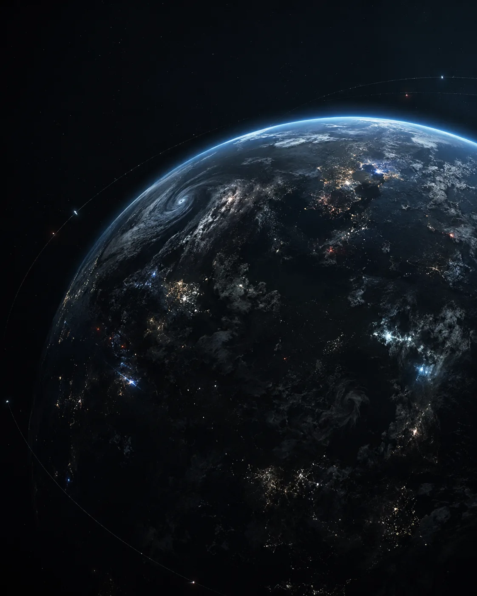

VISUAL DATA UNAVAILABLE
01 // ТЕКУЩЕЕ СОСТОЯНИЕ
ЗЕМЛЯ.2061 ГОД.
Старый мировой порядок разрушен. Планета разделена между новыми державами, закрытыми территориями и зонами распада.
СТАТУС ЦИВИЛИЗАЦИИ: ФРАГМЕНТИРОВАНА
ПРОКРУТИТЕ
▼
02 // МЕТА-ФАКТОР
ЧЕЛОВЕК
БОЛЬШЕ НЕ ЯВЛЯЕТСЯ
ПРЕДЕЛОМ
В мире появились люди, чьи способности выходят за пределы человеческой биологии. Они способны воздействовать на разум, материю, энергию и окружающую среду.
Большинство мета-людей не являются живым оружием. Но сильнейшие из них способны менять судьбу городов, государств и целых регионов.
NO SIGNAL
ID-███04-M
// МЕНТАЛЬНОЕ
Воздействие на восприятие, память, эмоции и сознание.
03 // ЦЕПЬ КАТАСТРОФ
СТАРЫЙ МИР
НЕ ВЫДЕРЖАЛ
// ПОЯВЛЕНИЕ
Мета-люди стали фактором, к которому старый мир оказался не готов.
04 // ТИПЫ ТЕРРИТОРИЙ
МИР БЕЗ
ЕДИНОГО БУДУЩЕГО
После катастроф человечество не смогло создать новую общую систему. Одни общества выбрали технологии и контроль. Другие — веру, изоляцию, восстановление, личную власть сверхлюдей или простое выживание.
MAP.ANALYSIS // TERRITORY STATE
STABLE
VISUAL DATA UNAVAILABLE
// СТАБИЛЬНЫЕ СИСТЕМЫ
Города, институты, экономика, армия и централизованная власть.
// КОНЕЦ ПЕРЕДАЧИ
КРАТКАЯ СВОДКА
ЗАВЕРШЕНА
ЗЕМЛЯ, 2061 ГОД.
ПРЕЖНИЙ МИРОВОЙ ПОРЯДОК УНИЧТОЖЕН.
МЕТА-ЛЮДИ ИЗМЕНИЛИ БАЛАНС СИЛ,
НО НЕ ЗАМЕНИЛИ ЧЕЛОВЕЧЕСТВО.
У РАЗНЫХ ЧАСТЕЙ МИРА
БОЛЬШЕ НЕТ ОБЩЕГО БУДУЩЕГО.
← ВЕРНУТЬСЯ В ТЕРМИНАЛ
SYS.BRIEFING // ЗЕМЛЯ • 2061 ГОД // ДОСТУП: PUBLIC